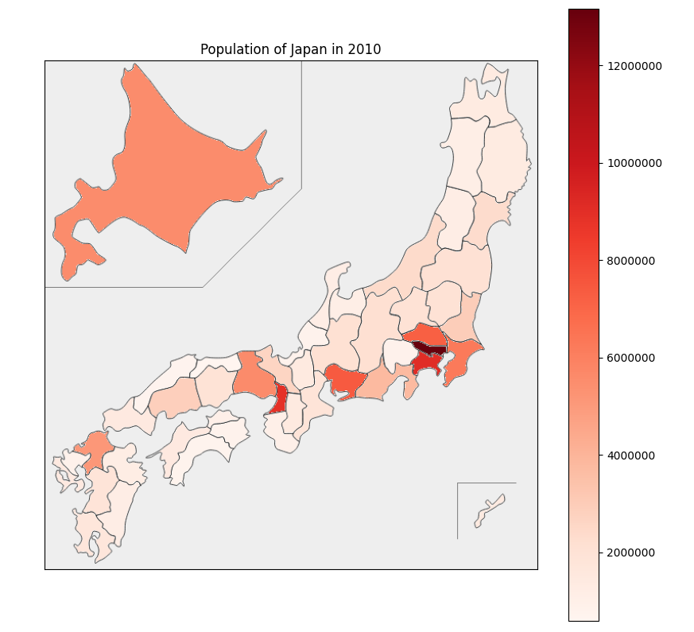
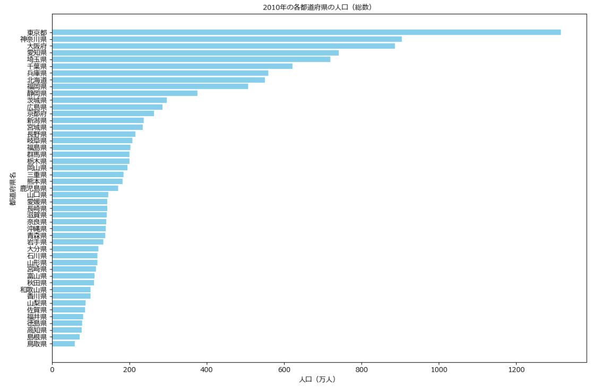

過去にPythonを用いた実業務ではAIモデルが出力した予測値を別のAIモデルの入力とするためにnumpyやpandasを用いてデータの加工を行ったり、予測結果をMatplotlibを用いて視覚的に確認し、有用なパラメータの確認や調整を行わせて頂きました。加工データは一般的なCSVデータに加え、netCDF4データを取り扱うこともありました。
上記の図は政府が統計を行っている国勢調査の結果から各都道府県の人口を2010年時点で抽出し、日本地図と横棒グラフに描画したものです。同一のデータであっても日本地図からは関東に人口集中していることが見て取れたり、横棒グラフからは実際の値から四国や九州が特に人口が少ないことが情報として得られます。